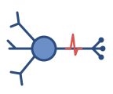
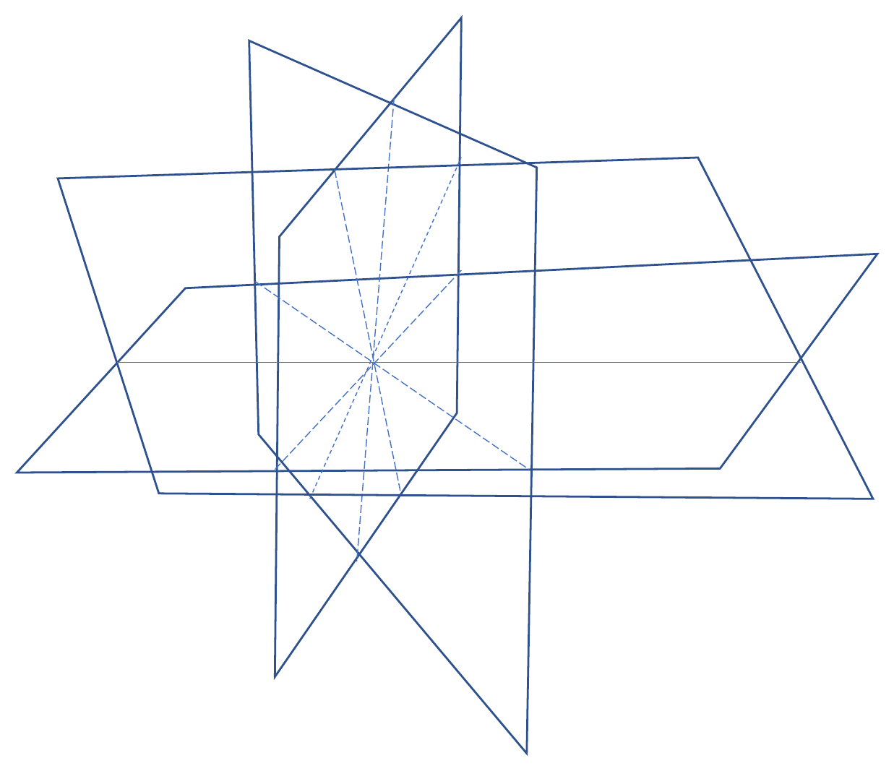

2026-11-01 GT Math Seminar
As \(\beta \to \infty\), with rates \(e^{\beta \Delta_i(x)/2}\):
Wait times disappear: the limit is a deterministic stepped process. Each step lowers \(E\), so the state diagram is acyclic and every path ends at a local minimum.
| rates | \(s_{xy}\) | rate | \(\beta \to \infty\) |
|---|---|---|---|
| MEF | \(1\) | \(e^{\beta\Delta/2}\) | \(\infty\) if \(\Delta > 0\), \(\ 0\) if \(\Delta < 0\) |
| Glauber | \(1/(2\cosh(\beta\Delta/2))\) | \(\sigma(\beta\Delta)\) | \(1\) if \(\Delta > 0\), \(\ 0\) if \(\Delta < 0\) |
| Metropolis | \(e^{-\beta\vert\Delta\vert/2}\) | \(\min(1, e^{\beta\Delta})\) | \(1\) if \(\Delta > 0\), \(\ 0\) if \(\Delta < 0\) |
| inverse temperature \(\beta = \log b < \infty\) | zero temperature \(b = \infty\) |
|---|---|
| total rate \(\log_b \sum_i b^{\rho_{x,i}}\) | \(\max_i \rho_{x,i}\) |
| action probabilities \(b^{\rho_{x,i}} \big/ \sum_j b^{\rho_{x,j}}\) | indicator of \(\arg\max_i \rho_{x,i}\) |
| some arrival, at a finite rate | instant arrival iff \(\max_i \rho_{x,i} > 0\) |
| Glauber log-rate \(\log_b \sigma(\beta\Delta)\) | Metropolis log-rate \(\min(0, \Delta)\) |
| Gibbs energies \(-\frac{1}{\beta}\log \pi_\beta\) | tropical law \(E - \min E\) |
| marginal energy of a part \(A\): \(\oplus_\lambda\) over \(A\) | \(E(A) = \min_{x \in A} E(x)\) |

| solid angle | chambers | fixed points |
|---|---|---|
| \(1/6\) | \(2\) | \(00\); \(\ 11\) |
| \(1/8\) | \(2\) | \(01\); \(\ 10\) |
| \(1/16\) | \(4\) | one each |
| \(1/24\) | \(2\) | \(\{00, 11\}\); \(\ \{01, 10\}\) |
| \(1/48\) | \(4\) | one each |
| data | margin \(\gamma\) | \(1/\gamma\) | fitted \(\lambda\) | solid angle of \(\mathcal{C}_Q\) |
|---|---|---|---|---|
| \(\{00\}\) | \(1/(2\sqrt2)\) | \(2.828\) | \(2.838\) | \(1/4\) |
| \(\{00, 11\}\) | \(1/(2\sqrt6)\) | \(4.899\) | \(4.909\) | \(1/24\) |
| refinements \(\pi : Z \to X\) | dual numbers \(\mathbb{R}_{\geq 0}[\varepsilon]/\langle\varepsilon^2\rangle\) | |
|---|---|---|
| \(\pi\), with measures \(q \ll p\) on \(Z\) | \(\longmapsto\) | \(T_q + I_{q\Vert p}(Z \vert X)\,\varepsilon\) |
| disjoint union \(\pi_1 + \pi_2\) | \(\longmapsto\) | sum: \(I\) is additive |
| Cartesian product \(\pi_1 \times \pi_2\) | \(\longmapsto\) | product: \(I\) obeys the Leibniz rule |
| composition \(\sigma \circ \pi\) | \(\longmapsto\) | tangent addition: the chain rule |
| inverse temperature \(\beta = \log b\) | zero temperature \(b \to \infty\) |
|---|---|
| flip rates \(b^{\Delta_i(x)/2}\) | instant steepest descent to local minima |
| MEF \(\ \log_b \sum_x \pi^Q_x \sum_i b^{\Delta_i(x)/2}\) | tropical polynomial \(\max_{x, i} \tfrac12 \Delta_i(x)\) |
| Gibbs law \(\pi_\beta(x) = \dfrac{b^{-E(x)}}{\sum_y b^{-E(y)}}\) | \(-\log_b \pi_\beta(x) \to E(x) - \min_y E(y)\) |
| pseudo-likelihood \(\log_b(1 + b^{\Delta})\) | hinge loss \(\max(0, \Delta)\) |